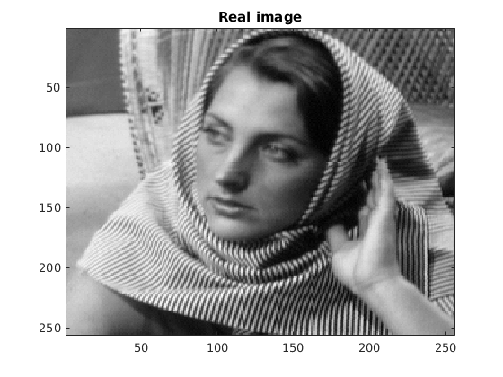
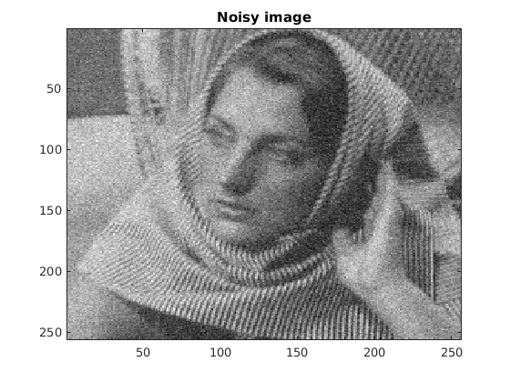
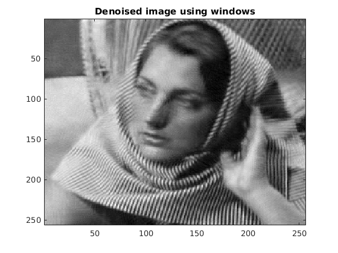
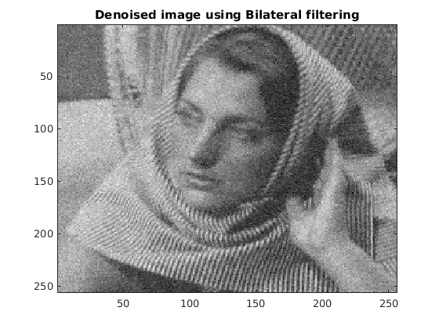

PCA Based Denoising
Inferences:
The values of MSE for all the 3 cases are given below. For denoising, we saw that bilateral filtering uses the information of its "immediate spatial neighbours" instead of a range and a similarity metric between patches, as we were doing for PCA based. The PCA denoising uses more information about the nearby patches in terms of mean squared error, and uses this information of similar patches to denoise. Bilateral filtering does not do any of this. That is the main difference between bilateral filtering and PCA based. So the main differences are:
- PCA based denoising uses knowledge of similar patches, but bilateral filtering doesn't. This is useful if there are similar patterns in the image.
- Bilateral filtering uses only its immediate spatial neighbours, whereas PCA-based doesn't necessarily do that.
- Bilateral filtering doesn't make use of the noise model, whereas PCA-based uses the noise model to be Gaussian.
- Bilateral filtering can't remove if the noise levels are too high, but PCA handles it very well.
tic; % hyperparameters sigma = 20; p = 7; L = 200; window = 31; spatial_sigma = 1.6; intensity_sigma = 9.7; % Get image and make it noisy im = double(imread('../data/barbara256.png')); [m, n] = size(im); im_noisy = im + sigma*randn(size(im)); im2 = myPCADenoising1(im_noisy, sigma, p); toc; tic; im3 = myPCADenoising2(im_noisy, sigma, p, L, window); toc; tic; im4 = myBilateralFiltering(im_noisy, spatial_sigma, intensity_sigma); toc; % Show all figures figure; imagesc(im); colormap(gray); title('Real image'); figure; imagesc(im_noisy); colormap(gray); title('Noisy image'); figure; imagesc(im2); colormap(gray); title('Denoised image'); figure; imagesc(im3); colormap(gray); title('Denoised image using windows'); figure; imagesc(im4); colormap(gray); title('Denoised image using Bilateral filtering'); fprintf('MSE of original and global PCA denoised image = %f\n', sum(sum((im2 - im).^2))/m/n); fprintf('MSE of original and windowed PCA denoised image = %f\n', sum(sum((im3 - im).^2))/m/n); fprintf('MSE of original and bilateral filtering = %f\n', sum(sum((im4 - im).^2))/m/n);
Elapsed time is 0.096114 seconds. Elapsed time is 144.486347 seconds. Elapsed time is 1.276601 seconds. MSE of original and global PCA denoised image = 95.977075 MSE of original and windowed PCA denoised image = 59.684398 MSE of original and bilateral filtering = 339.232245   